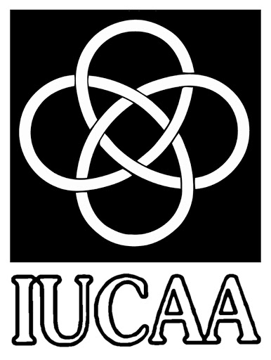
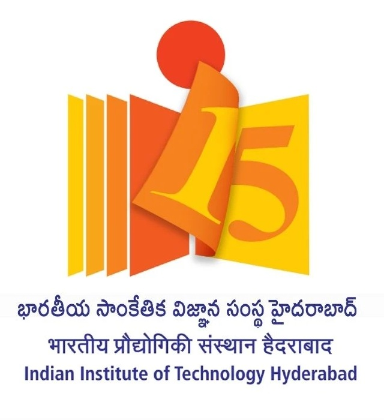

Beginning Astronomy v3:
Start a data-driven Journey


National Workshop on Beginner's Astronomy 11-13 December, 2023
Organized by IUCAA and Department of Physics, IIT Hyderabad
About the Wokshop
Modern day telescopes produce petabytes of data and this presents students with the opportunity to analyze such publicly available astronomical data sets. This workshop is aimed at providing early bachelors/late masters students having basic knowledge of physics, mathematics and computation with a hands-on introduction to astronomy using such datasets. This 3 day workshop will cover some of the basic concepts of stellar, galactic and extra-galactic physics through short lectures and hands-on computational sessions with some of the publicly available astronomical datasets. Students will be provided with accommodation for their interval of stay and will be provided with certificates on completion.
NO REGISTRATION FEE
Accomodation and food will be provided
Who are eligible?
Students of MSc, MTech (all years), BSc, BTech, Integrated MSc, Integrated MTech (2nd Year Onwards)All branches are welcome.
Venue
Auditorium
Academic Block A
IIT Hyderabad
IITH Road, near NH-65
Sangareddy
Kandi
Telangana-502285
How to apply?
Either fill the google form https://forms.gle/fMjZGZ7bouUJqP7F6
OR scan the QR code in the Workshop poster if you are interested in Data Driven Astronomy. For further queries, mail to beginning.astronomy.iucaa@gmail.com
Application Deadline
13th November
Announcement of Selected Participants
20th November
How to reach?
By Air: Nearest airport - Rajiv Gandhi International Airport (60 km from campus). Take a cab directly to IIT Hyderabad. Approximate travel time - 1.5 hrs
By Train: Nearest Railway Station - Secunderabad Junction / Lingampally Station - Take a cab directly to IIT Hyderabad. Approximate travel time - 2 hrs.
By Bus: Board the bus outside Secunderabad Railway Station till Patancheru bus station. Take next bus to Sangareddy and get down in front of IITH main gate.
Coordinators:
- Dr Souradeep Bhattacharya (IUCAA)
- Dr Chayan Mondal (IUCAA)
- Dr Megha Anand (IUCAA)
- Dr Mayukh Pahari (IITH)
- Prof Shantanu Desai (IITH)
- Prof Ranjeev Misra (IUCAA)
Local Organizing Committee:
| Name | |
|---|---|
| Abhishek Tiwari | ph22mscst11024@iith.ac.in |
| Akansha Sharma | ph22mscst11010@iith.ac.in |
| Ambica Govind | ep21btech11007@iith.ac.in |
| Anish Sarkar | ph22mscst11032@iith.ac.in |
| Khushi Lalit | ph22mscst11019@iith.ac.in |
| Kunj Panchal | ep21btech11017@iith.ac.in |
| Pragya Yadav | ch21btech11023@iith.ac.in |
| Ravina Paldiya | ph22mscst11034@iith.ac.in |
| Rushikesh Nillapale | es20btech11022@iith.ac.in |
| Saurabh Sharma | ph22resch01002@iith.ac.in |
| Sumanta Biswas | ph22mscst11005@iith.ac.in |
| Tanmoy Dutta | ph22mscst11022@iith.ac.in |
| Vishal Jadoliya | ph23resch11022@iith.ac.in |
Tentative Schedule
Day 1: 11 December, 2023
Venue: A-Block Auditorium
| Time | Topic | Speaker |
|---|---|---|
| 09:00 AM - 10:00 AM | Inauguration and Opening Session | Chief Guest, Director |
| 10:00 AM - 10:30 AM | High Tea | Auditorium Foyer |
| 10:30 AM - 11:45 AM | Introduction to Astronomy | Coordinators |
| 11:45 PM - 01:00 PM | Introduction to Sun: Aditya L1 Mission | Coordinators |
| 01:00 PM - 02:15 PM | Lunch | Participants: New Mess |
| 02:15 PM - 03:45 PM | Hands-on session on Stellar Evolution | Coordinators |
| 03:45 PM - 04:00 PM | Tea Break | Auditorium Foyer |
| 04:00 PM - 05:15 PM | Hands-on session on Solar Astronomy | Coordinators |
| 05:30 PM - 06:30 PM | An evening with an expert: Lecture on gravitational wave from Big Bang |
Prof Shantanu Desai |
| 06:30 PM - 06:45 PM | Tea Break | Auditorium Foyer |
Day 2: 12 December, 2023
Venue: A-Block Auditorium
| Time | Topic | Speaker |
|---|---|---|
| 10:00 AM - 10:30 AM | Introduction to Galactic Astronomy | Coordinators |
| 10:30 AM - 11:30 AM | Galaxy Evolution 1 | Coordinators |
| 11:30 AM - 11:45 PM | Tea Break | Auditorium Foyer |
| 11:45 PM - 01:00 PM | Galaxy Evolution 2 | Coordinators |
| 01:00 PM - 02:15 PM | Lunch | Participants: New Mess |
| 02:15 PM - 03:30 PM | Hands-on session on Nearby Galaxies | Coordinators |
| 03:30 PM - 04:00 PM | Tea Break | Auditorium Foyer |
| 04:00 PM - 05:15 PM | Hands-on session on High-redshift Galaxies | Coordinators |
| 05:30 PM - 06:30 PM | An evening with an expert: Learning from Indian Astronomy Mission |
Prof Ranjeev Mishra |
Workshop Dinner: 7:30 PM - 9:00 PM
Venue: B-Block Foyer
Day 3: 13 December, 2023
Venue: A-Block Auditorium
| Time | Topic | Speaker |
|---|---|---|
| 10:00 AM - 11:15 AM | Hands-on session on Astronomy with Public Data | Coordinators |
| 11:15 AM - 11:30 AM | Tea Break | Auditorium Foyer |
| 11:30 AM - 01:00 PM | Pulsar Astronomy Hands-on Session on Pulsar Data with Astrosat |
Coordinators |
| 01:00 PM - 02:15 PM | Lunch | Participants: New Mess |
| 02:15 PM - 03:30 PM | Black Hole Astronomy Hands-on Session on Black Hole Spectra with Chandra |
Coordinators |
| 03:30 PM - 03:45 PM | Tea Break | Auditorium Foyer |
| 03:45 PM - 04:30 PM | Open Questions & Career in Astronomy | Coordinators |
| 04:30 PM - 05:00 PM | Closing Remarks | Coordinators |
| 05:00 PM - 05:30 PM | Tea Break | Auditorium Foyer |
| 09:00 PM - 10:00 PM | Night Sky Observation Session with Telescope | Coordinators |
List of Selected Participants
Will be published soon!